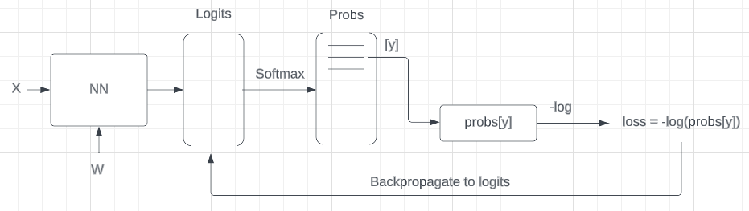
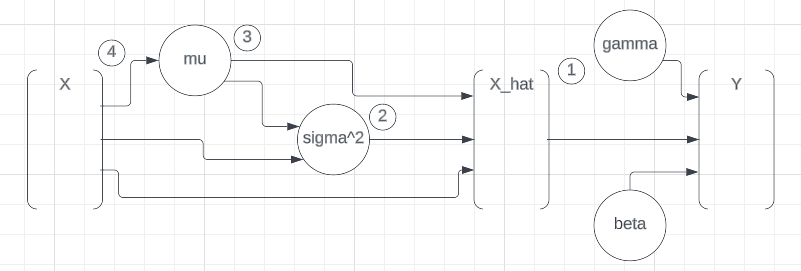

Show code cell source
import random
import string
import numpy as np
import torch
import torch.nn.functional as F
from torch import Tensor
import matplotlib.pyplot as plt
import seaborn as sns
import plotly.express as px
import plotly.graph_objects as go
import pandas as pd
from dataclasses import dataclass, field
torch.set_printoptions(linewidth=120)
seed = 2**31 - 1
Backpropagation#
In this notebook, we will write the backpropagation manually. It is valuable exercise for gaining a deeper understanding of the algorithm. Although in practice, we typically do not implement backpropagation manually, it is crucial to comprehend the process that occurs beneath the surface.
One challenge with backpropagation is that it represents a leaky abstraction. Understanding of the algorithm can avoid numerous errors and improve the ability to debug issues that may arise.
Setup#
Load the data
# Load the data
with open("./data/names.txt", "r") as f:
names = f.read().splitlines()
print(f"Total # names: {len(names):.>25,}")
print(f"Total # characters in all names: {len(''.join(names)):,}")
print(names[:5])
Total # names: ...................32,033
Total # characters in all names: 196,113
['emma', 'olivia', 'ava', 'isabella', 'sophia']
Encoding and decoding characters
We define an encoder ch2ix and decoder ix2ch function that maps a character with a numerical representation (i.e. a unique integer) and vice-versa.
chars = "." + string.ascii_lowercase
ch2ix = {s: i for i, s in enumerate(chars)}
ix2ch = {i: s for s, i in ch2ix.items()}
print("Encoder ch2ix:\n", ch2ix)
print("Decoder ix2ch:\n", ix2ch)
print("E.g. emma:", [ch2ix[c] for c in ".emma."])
vocab_size = len(chars)
print(f"Vocab size: {vocab_size:,}")
Encoder ch2ix:
{'.': 0, 'a': 1, 'b': 2, 'c': 3, 'd': 4, 'e': 5, 'f': 6, 'g': 7, 'h': 8, 'i': 9, 'j': 10, 'k': 11, 'l': 12, 'm': 13, 'n': 14, 'o': 15, 'p': 16, 'q': 17, 'r': 18, 's': 19, 't': 20, 'u': 21, 'v': 22, 'w': 23, 'x': 24, 'y': 25, 'z': 26}
Decoder ix2ch:
{0: '.', 1: 'a', 2: 'b', 3: 'c', 4: 'd', 5: 'e', 6: 'f', 7: 'g', 8: 'h', 9: 'i', 10: 'j', 11: 'k', 12: 'l', 13: 'm', 14: 'n', 15: 'o', 16: 'p', 17: 'q', 18: 'r', 19: 's', 20: 't', 21: 'u', 22: 'v', 23: 'w', 24: 'x', 25: 'y', 26: 'z'}
E.g. emma: [0, 5, 13, 13, 1, 0]
Vocab size: 27
Dataset
@dataclass
class Dataset:
"""
Attributes:
names: list of names.
block_size: context length: how many characters do we take to predict the next one?
"""
names: list[str]
block_size: int = 3
verbose: bool = False
X: Tensor = field(init=False)
Y: Tensor = field(init=False)
def __post_init__(self) -> None:
self._make_dataset()
def _make_dataset(self) -> None:
X, Y = [], []
for w in self.names:
if self.verbose:
print(w)
context = [0] * self.block_size
for ch in w + ".":
ix = ch2ix[ch]
X.append(context)
Y.append(ix)
if self.verbose:
print("".join(ix2ch[i] for i in context), "--->", ix2ch[ix])
context = context[1:] + [ix] # crop and append
self.X = torch.tensor(X)
self.Y = torch.tensor(Y)
print(f"X.shape: {self.X.shape}, Y.shape: {self.Y.shape}")
# Create a training, validation and test set
block_size = 3
np.random.seed(42)
np.random.shuffle(names)
n1 = int(0.8 * len(names))
n2 = int(0.9 * len(names))
ds_tr = Dataset(names[:n1], block_size=block_size)
Xtr, Ytr = ds_tr.X, ds_tr.Y # 80%
ds_val = Dataset(names[n1:n2], block_size=block_size)
Xval, Yval = ds_val.X, ds_val.Y # 10%
ds_te = Dataset(names[n2:], block_size=block_size)
Xte, Yte = ds_te.X, ds_te.Y # 10%
X.shape: torch.Size([182671, 3]), Y.shape: torch.Size([182671])
X.shape: torch.Size([22784, 3]), Y.shape: torch.Size([22784])
X.shape: torch.Size([22691, 3]), Y.shape: torch.Size([22691])
Utility functions
def compare_gradients(description, manual_grads, autograd_grads):
exact_match = torch.all(manual_grads == autograd_grads.grad).item()
approx_match = torch.allclose(manual_grads, autograd_grads.grad)
max_difference = (manual_grads - autograd_grads.grad).abs().max().item()
print(
f"{description:15s} | exact: {str(exact_match):5s} | approximate: {str(approx_match):5s} | maxdiff: {max_difference}"
)
Model#
We initialise a MLP model with 64 hidden units and an character embedding dimension of 10.
Note
Because we have a batch norm layer, we do not need to add a bias term to the linear layers. We define them anyway because it’s still interesting to calculate the gradients.
Normally we should initialise the weights and biases as follows:
gain = 5/3 for tanh
\(W_1: \large\frac{5/3}{\sqrt{\text{fan}_{\text{in}}}}\)
\(b_1: 0\)
\(W_2: \large\frac{5/3}{\sqrt{\text{fan}_{\text{in}}}}\)
\(b_2: 0\)
However, we will initialise the weights and biases in non-standard ways because sometimes initializating with e.g. all zeros could mask an incorrect implementation of the backward pass.
n_emb = 10 # the dimensionality of the character embedding vectors
n_hidden = 64 # the number of neurons in the hidden layer of the MLP
g = torch.Generator().manual_seed(seed) # for reproducibility
C = torch.randn((vocab_size, n_emb), generator=g)
# Layer 1
W1 = (
torch.randn((n_emb * block_size, n_hidden), generator=g)
* (5 / 3)
/ ((n_emb * block_size) ** 0.5)
)
b1 = torch.randn(n_hidden, generator=g) * 0.1
# Layer 2
W2 = torch.randn((n_hidden, vocab_size), generator=g) * 0.1
b2 = torch.randn(vocab_size, generator=g) * 0.1
# BatchNorm parameters
bn_gain = torch.randn((1, n_hidden)) * 0.1 + 1.0
bn_bias = torch.randn((1, n_hidden)) * 0.1
parameters = [C, W1, b1, W2, b2, bn_gain, bn_bias]
n_params = sum(p.nelement() for p in parameters)
print(f"Total # parameters: {n_params:,}")
for p in parameters:
p.requires_grad = True
Total # parameters: 4,137
Forward pass#
Calculate a single batch
bs = 32
# construct a minibatch
ix = torch.randint(0, Xtr.shape[0], (bs,), generator=g)
Xb, Yb = Xtr[ix], Ytr[ix] # batch
Calculate a forward pass on the batch
We will make the forward pass with the smallest steps possible. This will make it easier to understand the backward pass.
Batch norm calculation:
emb_cat is a 32x30 tensor (batch size x sequence length)
\(\textrm{h_pre_bn} = \textrm{emb_cat} \cdot W_1 + b_1\)
\(\textrm{bn_mean_i} = \sum_{i=1}^{32}\textrm{h_pre_bn}_i\)
\(\textrm{bn_diff} = \textrm{h_pre_bn} - \textrm{bn_mean_i}\)
\(\textrm{bn_diff2}= \textrm{bn_diff}^2\)
\(\textrm{bn_var} = \sum_{i=1}^{32}\textrm{bn_diff2}\)
\(\textrm{bn_var_inv} = \frac{1}{\sqrt{(\textrm{bn_var} + \epsilon)}}\)
\(\textrm{bn_raw} = \textrm{bn_diff} * \textrm{bn_var_inv}\)
\(\textrm{h_pre_act} = \textrm{bn_gain} * \textrm{bn_raw} + \textrm{bn_bias}\)
# Embed the characters into vectors and concatenate them
emb = C[Xb] # 32 x 3 x 10
emb_cat = emb.view(emb.shape[0], -1) # 32 x 30
# Linear layer 1
# pre-batch norm
h_pre_bn = emb_cat @ W1 + b1 # 32 x 64
# batch norm layer
bn_mean_i = (
h_pre_bn.sum(0, keepdim=True) / bs
) # 1 x 64 (keepdim=True to keep the 1 x 64 shape otherwise 64)
bn_diff = h_pre_bn - bn_mean_i # 32 x 64
bn_diff2 = bn_diff**2 # 32 x 64
bn_var = bn_diff2.sum(0, keepdim=True) / (
bs - 1
) # 1 x 64 Bessel's correction (dividing by n-1, not n)
bn_var_inv = (bn_var + 1e-5) ** -0.5 # 1 x 64
bn_raw = bn_diff * bn_var_inv # 32 x 64 batchnorm raw output
h_pre_act = bn_gain * bn_raw + bn_bias # 32 x 64 hiodden layer pre-activation
# non-linearity
h = torch.tanh(h_pre_act) # 32 x 64
# Linear layer 2
# output layer
logits = h @ W2 + b2 # 32 x 28
# cross entropy loss (same as F.cross_entropy(logits, Yb))
logit_maxes = logits.max(1, keepdim=True).values # 32 x 1
norm_logits = logits - logit_maxes # 32 x 27 subtract max for numerical stability
counts = norm_logits.exp() # 32 x 27
counts_sum = counts.sum(1, keepdims=True) # 32 x 1
counts_sum_inv = counts_sum**-1 # 32 x 1
probs = counts * counts_sum_inv # 32 x 27
logprobs = probs.log() # 32 x 27
loss = -logprobs[range(bs), Yb].mean()
Backward pass#
Pytorch backward pass#
We will first calculate the backward pass with Pytorch’s autograd. This will allow us to compare the results of our manual implementation with the Pytorch implementation.
# PyTorch backward pass
for p in parameters:
p.grad = None
for t in [
logprobs,
probs,
counts,
counts_sum,
counts_sum_inv,
norm_logits,
logit_maxes,
logits,
h,
h_pre_act,
bn_raw,
bn_var_inv,
bn_var,
bn_diff2,
bn_diff,
h_pre_bn,
bn_mean_i,
emb_cat,
emb,
]:
t.retain_grad()
loss.backward()
loss
tensor(3.4002, grad_fn=<NegBackward0>)
Manual backward pass#
Cross entropy loss#
We now calculate the backward pass of each step manually. We will compare the results with the Pytorch implementation.
Note
The shape of the gradient should be the same as the shape of its parameter
logprobs
loss = -logprobs[range(bs), Yb].mean()
logprobs[range(bs), Yb]
plucks the logprob corresponding to the value of the element of Yb for each sample in the batch.
The derivative of loss with respect to the logprobs is 0 everywhere except for the logprob corresponding to the value of the elements of Yb where it is \(-\large\frac{1}{bs}\).
d_logprobs = torch.zeros_like(logprobs) # 32 x 27
d_logprobs[range(bs), Yb] = -1.0 / bs
compare_gradients("logprobs", d_logprobs, logprobs)
logprobs | exact: True | approximate: True | maxdiff: 0.0
probs
logprobs = probs.log()
All the elements of probs are loged element-wise. The derivative of a log is \({\large\frac{d}{dx}} log(x) = \large\frac{1}{x}\).
The derivative of logprobs with respect to probs is thus (chain rule) \({\large\frac{1}{probs}} * \textrm{d\_logprobs}\).
Intuitively, if an element of probs is close to 1, the network correctly predicts the next character. The d_logprobs is just passed through.
However, when an element of probs is small, 1/probs is big and amplifies d_logprobs.
probs and d_logprobs are both 32x27 tensors and therfore can be multiplied without broadcasting.
d_probs = (1.0 / probs) * d_logprobs # 32 x 27
compare_gradients("probs", d_probs, probs)
probs | exact: True | approximate: True | maxdiff: 0.0
d_counts_sum_inv
probs = counts * counts_sum_inv
Toy example:
Broadcasting a 3x1 tensor to a 3x3 tensor
This is actually 2 operations: first we replicate the 3x1 tensor to a 3x3 tensor and then we multiply the 2 tensors element-wise.
To calculate the derivative of c with respect to b, we first calculate the derivative of a * b with respect to b. This is a.
Then we have to calculate the derivative of the replication of b with respect to b. On the computational graph, b is branched into 3 branches.
The derivative is the sum of the derivatives of the 3 branches: $\( \begin{align*} \begin{bmatrix} a_{11} + a_{21} + a_{31}\\ a_{21} + a_{22} + a_{32}\\ a_{31} + a_{23} + a_{33} \end{bmatrix} \end{align*} \)$
counts is a 32x27 tensor and counts_sum_inv is a 32x1 tensor. counts_sum_inv gets broadcasted (replicated 27x) to a 32x27 tensor and then multiplied by counts. In the backward pass we have to sum the derivatives of the 27 branches.
Note
In the forward pass, if we sum the tensor or compute its mean, max, etc., we need to replicate it (for broadcasting) in the backward pass. Similarly, if we replicate the tensor in the forward pass, we need to sum it in the backward pass.
d_counts_sum_inv = (counts * d_probs).sum(1, keepdims=True) # 32 x 1
compare_gradients("counts_sum_inv", d_counts_sum_inv, counts_sum_inv)
counts_sum_inv | exact: True | approximate: True | maxdiff: 0.0
d_counts - branch 1
probs = counts * counts_sum_inv
counts_sum_inv depends on counts. counts_sum_inv backpropagates through counts_sum and counts_sum backpropagates through counts. counts is a node that is used twice. The two branches are:
probs = counts * counts_sum_inv
and
counts_sum = counts.sum(1, keepdims=True)
counts_sum_inv = counts_sum**-1
We have to sum the gradients of the two branches later to get the correct gradient of counts.
counts is a 32x27 tensor counts_sum_inv is a 32x1 tensor. counts_sum_inv gets broadcasted, notcounts, so we don’t sum.
d_counts = counts_sum_inv * d_probs # 32 x 27
d_counts_sum
counts_sum_inv = counts_sum**-1
\(\large\frac{d}{dx}\frac{1}{x} = -\frac{1}{x^2}\)
counts_sum and d_counts_sum_inv are both 32x1 tensors and can be multiplied without broadcasting.
d_counts_sum = (-1.0 / counts_sum**2) * d_counts_sum_inv # 32 x 1
compare_gradients("counts_sum", d_counts_sum, counts_sum)
counts_sum | exact: True | approximate: True | maxdiff: 0.0
d_counts - branch 2
counts_sum = counts.sum(1, keepdims=True)
counts_sum is the sum of the rows of counts. counts has shape 32x27 and counts_sum has shape 32x1.
Toy example: $\( \begin{align*} \begin{bmatrix} a_{11} & a_{12} & a_{13}\\ a_{21} & a_{22} & a_{23}\\ a_{31} & a_{32} & a_{33} \end{bmatrix} => \begin{bmatrix} b_1(=a_{11} + a_{12} + a_{13})\\ b_2(=a_{21} + a_{22} + a_{23})\\ b_3(=a_{31} + a_{32} + a_{33}) \end{bmatrix} \end{align*} \)$
We have a 3x3 tensor a and sum the rows to get a 3x1 tensor b. We have the derivative of the loss with respect to b. We want to calculate the derivative of the loss with respect to the elements of a.
b1 only depends on a11, a12 and a13. The derivative of b1 with respect to a11, a12, and a13 is 1. The derivative of b1 with respect to all the other elements of a is 0.
In the chain rule, we multiply the derivative of the loss with respect to b1 with the derivative of b1 with respect to a11, a12 and a13.
Note
An addition can be seen as a router of gradients. The gradient comming from above gets routed equally to all the elements that participate in the addition. In this case the derivative of the loss with respect to b1 is routed equally to a11, a12 and a13.
In the backpropagation we need to take the 32x1 tensor d_counts_sum and replicate it to form a 32x27 tensor. We also need to add this d_counts gradients to the d_counts gradients that from the other branch.
d_counts += torch.ones_like(counts) * d_counts_sum # 32 x 27
compare_gradients("counts", d_counts, counts)
counts | exact: True | approximate: True | maxdiff: 0.0
d_norm_logits
counts = norm_logits.exp()
\(\large\frac{d}{dx}e^x = e^x\)
d_norm_logits = norm_logits.exp() * d_counts # 32 x 27 == counts * d_counts
compare_gradients("norm_logits", d_norm_logits, norm_logits)
norm_logits | exact: True | approximate: True | maxdiff: 0.0
d_logits - branch 1, d_logit_maxes
norm_logits = logits - logit_maxes
Toy example: $\( \begin{align*} \begin{bmatrix} c_{11} & c_{12} & c_{13}\\ c_{21} & c_{22} & _{23}\\ c_{31} & c_{32} & _{33} \end{bmatrix} = \begin{bmatrix} a_{11} & a_{12} & a_{13}\\ a_{21} & a_{22} & a_{23}\\ a_{31} & a_{32} & a_{33} \end{bmatrix} - \begin{bmatrix} b_1\\ b_2\\ b_3 \end{bmatrix} = \begin{bmatrix} a_{11}-b1 & a_{12}-b_1 & a_{13}-b_1\\ a_{21}-b2 & a_{22}-b_2 & a_{23}-b_2\\ a_{31}-b3 & a_{32}-b_3 & a_{33}-b_3 \end{bmatrix} \end{align*} \)$
The broadcasting of b to a is done by replicating b to a 3x3 tensor. This effectively creates 3 branches. To calculate the derivative of c with respect to b, we need to sum the derivatives of the 3 branches.
norm_logits is a 32x27 tensor, logits is a 32x27 tensor and logit_maxes is a 32x1 tensor.
logit_maxes gets broadcasted so we sum the gradients. logits doesn’t gets broadcasted so we don’t sum the gradients.
d_logits = d_norm_logits.clone() # 32 x 27
d_logits_maxes = (-d_norm_logits).sum(1, keepdims=True) # 32 x 1
compare_gradients("logits_maxes", d_logits_maxes, logit_maxes)
logits_maxes | exact: True | approximate: True | maxdiff: 0.0
We substracted the maximum of the logits from the logits for numerical stability, otherwise the exponentiation of the logits could overflow when a logit is large. This shifting operation has no effect on probs.
\(\Large\frac{e^x}{\sum_i{e^x_i}} = \frac{e^{x+a}}{\sum_i{e^{x_i+a}}}\)
Because subtracting the maximum of the logits from the logits has no effect on probs it will also not change loss. The gradients of logits_maxes should all be zero.
d_logits_maxes
tensor([[-1.8626e-09],
[ 1.8626e-09],
[ 9.3132e-10],
[ 4.6566e-09],
[ 3.2596e-09],
[ 2.5611e-09],
[ 1.6298e-09],
[ 1.3970e-09],
[-2.0955e-09],
[ 0.0000e+00],
[-1.8626e-09],
[-3.2596e-09],
[ 1.8626e-09],
[ 1.6298e-09],
[ 0.0000e+00],
[-1.1642e-09],
[ 6.9849e-10],
[ 2.3283e-09],
[ 1.3970e-09],
[-2.0955e-09],
[-2.0955e-09],
[-3.2596e-09],
[-9.3132e-10],
[ 1.1642e-09],
[ 1.3970e-09],
[-2.3283e-10],
[-5.8208e-09],
[ 6.9849e-10],
[ 0.0000e+00],
[ 4.6566e-10],
[-4.6566e-10],
[ 0.0000e+00]], grad_fn=<SumBackward1>)
d_logits - branch 2
logit_maxes = logits.max(1, keepdim=True).values
logits.max(1) returns a tuple of 2 tensors. The first tensor is the maximum values of each row of logits and the second tensor is the indices of the maximum values.
We have a 32 x 27 tensor. The max of the tensor plucks out the maximum value of each row and returns a 32 x 1 tensor. The derivative should be 1 * d_logit_maxes for the maximum value and 0 for all the other values in the row.
We can calculate the derivative like we did for logprobs where we created a 32 x 27 zero-tensor and then populate it with 1 at the indices of the maximum values. Another way is to create a one-hot tensor with a 1 at the indices of the maximum values.
Because we are on the second branch, we also need to add the d_logits from the first branch.
plt.imshow(F.one_hot(logits.max(1).indices, num_classes=logits.shape[1]))
plt.show()
d_logits += (
F.one_hot(logits.max(1).indices, num_classes=logits.shape[1]) * d_logits_maxes
) # 32 x 27
compare_gradients("logits", d_logits, logits)
logits | exact: True | approximate: True | maxdiff: 0.0
Layer 2#
d_h, d_W2, d_b2
logits = h @ W2 + b2
Toy example:
h is a 32 x 64 tensor, W2 is a 64 x 27 tensor and b2 is 27d vector. The bias b2 is broadcasted to a 32 x 27 tensor (h @ W2). Internally, the broadcasting is done by casting the 27d vector to a 1 x 27 tensor and then replicating it vertically to a 32 x 27 tensor.
Note
It’s not realy necessary to remember the formula’s for the derivatives of the linear transformation. The dimensions of the tensors will tell how to calculate the derivatives.
Example:
To calculate d_h. The shape of d_h is equal to the shape of h. It’s 32 x 64. We also know that d_h should be some matrix multiplication of d_logits and W2. The shape of d_logits is 32 x 27 and the shape of W2 is 64 x 27. So we can conclude that d_h = d_logits @ W2.T.
The shape of d_W2 is equal to the shape of W2. It’s 64 x 27. We also know that d_W2 should be some matrix multiplication of h.T and d_logits. The shape of h.T is 64 x 32 and the shape of d_logits is 32 x 27. So we can conclude that d_W2 = h.T @ d_logits.
The shape of d_b2 is equal to the shape of b2. It’s 27. We also know that d_b2 should be the sum of d_logits along axis 0. The shape of d_logits is 32 x 27. So we can conclude that d_b2 = d_logits.sum(axis=0).
d_h = d_logits @ W2.T # 32 x 64
d_W2 = h.T @ d_logits # 64 x 27
d_b2 = d_logits.sum(0, keepdims=True) # 1 x 27
compare_gradients("h", d_h, h)
compare_gradients("W2", d_W2, W2)
compare_gradients("b2", d_b2, b2)
h | exact: True | approximate: True | maxdiff: 0.0
W2 | exact: True | approximate: True | maxdiff: 0.0
b2 | exact: True | approximate: True | maxdiff: 0.0
Layer 1#
Non-linearity#
d_h_pre_act
h = torch.tanh(h_pre_act)
\({\large\frac{d}{dx}}\text{tanh}(x) = 1 - \text{tanh}^2(x)\)
d_h_pre_act = (1.0 - h**2) * d_h # 32 x 64
compare_gradients("h_pre_act", d_h_pre_act, h_pre_act)
h_pre_act | exact: False | approximate: True | maxdiff: 4.656612873077393e-10
Batch norm#
d_bn_gain, d_bn_raw, d_bn_bias
h_pre_act = bn_gain * bn_raw + bn_bias
bn_gain and bn_bias are 1 x 64 tensors. bn_raw and h_pre_act are 32 x 64 tensors.
d_bn_gain = (bn_raw * d_h_pre_act).sum(0, keepdims=True) # 1 x 64
d_bn_raw = bn_gain * d_h_pre_act # 32 x 64
d_bn_bias = d_h_pre_act.sum(0, keepdims=True) # 1 x 64
compare_gradients("bn_gain", d_bn_gain, bn_gain)
compare_gradients("bn_raw", d_bn_raw, bn_raw)
compare_gradients("bn_bias", d_bn_bias, bn_bias)
bn_gain | exact: False | approximate: True | maxdiff: 1.862645149230957e-09
bn_raw | exact: False | approximate: True | maxdiff: 4.656612873077393e-10
bn_bias | exact: False | approximate: True | maxdiff: 1.862645149230957e-09
d_bn_diff - branch 1, d_bn_var_inv
bn_raw = bn_diff * bn_var_inv
bn_diff and bn_raw are 32 x 64 tensors, bn_var_inv is a 1 x 64 tensor.
d_bn_diff = bn_var_inv * d_bn_raw # 32 x 64
d_bn_var_inv = (bn_diff * d_bn_raw).sum(0, keepdims=True) # 1 x 64
compare_gradients("bn_var_inv", d_bn_var_inv, bn_var_inv)
bn_var_inv | exact: False | approximate: True | maxdiff: 2.7939677238464355e-09
d_bn_var
bn_var_inv = (bn_var + 1e-5) ** -0.5
\(\large\frac{d}{dx}\frac{1}{\sqrt(x)} = -\frac{1}{2x^{3/2}}\)
bn_var_inv and bn_var are 1 x 64 tensors.
d_bn_var = -0.5 * ((bn_var + 1e-5) ** (-3 / 2)) * d_bn_var_inv # 1 x 64
compare_gradients("bn_var", d_bn_var, bn_var)
bn_var | exact: False | approximate: True | maxdiff: 9.313225746154785e-10
d_bn_diff2
bn_var = bn_diff2.sum(0, keepdim=True) / (bs - 1)
Toy example: $\( \begin{align*} \begin{bmatrix} a_{11} & a_{12}\\ a_{21} & a_{22} \end{bmatrix} -> \begin{bmatrix} b_1 & b_2 \end{bmatrix} = \begin{bmatrix} (a_{11} + a_{12})/(bs-1) & (a_{21} + a_{22})/(bs-1) \end{bmatrix} \end{align*} \)$
bn_diff2 is a 32 x 64 tensor, bn_var is a 1 x 64 tensor.
The tensor bn_diff2 is summed in the forward pass, therefore we have to replicate the gradients in the backward pass.
d_bn_diff2 = torch.ones_like(bn_diff2) / (bs - 1) * d_bn_var # 1 x 64
compare_gradients("bn_diff2", d_bn_diff2, bn_diff2)
bn_diff2 | exact: False | approximate: True | maxdiff: 2.9103830456733704e-11
d_bn_diff - branch 2
bn_diff2 = bn_diff**2
\({\large\frac{d}{dx}}x^2 = 2x\)
bn_diff2 and bn_diff are 32 x 64 tensors.
d_bn_diff += 2.0 * bn_diff * d_bn_diff2 # 32 x 64
compare_gradients("bn_diff", d_bn_diff, bn_diff)
bn_diff | exact: False | approximate: True | maxdiff: 9.313225746154785e-10
bn_diff = h_pre_bn - bn_mean_i
d_h_pre_bn - branch 1, d_bn_mean_i
bn_diff = h_pre_bn - bn_mean_i
bn_diff and h_pre_bn are 32 x 64 tensors. bn_mean_i is a 1 x 64 tensor.
d_h_pre_bn = d_bn_diff.clone() # 32 x 64
d_bn_mean_i = -d_bn_diff.sum(0, keepdims=True) # 1 x 64
compare_gradients("bn_mean_i", d_bn_mean_i, bn_mean_i)
bn_mean_i | exact: False | approximate: True | maxdiff: 3.725290298461914e-09
d_h_pre_bn - branch 2
bn_mean_i = h_pre_bn.sum(0, keepdim=True) / bs
bn_mean_i is a 1 x 64 tensor, h_pre_bn is a 32 x 64 tensor.
d_h_pre_bn += torch.ones_like(h_pre_bn) / bs * d_bn_mean_i # 32 x 64
compare_gradients("h_pre_bn", d_h_pre_bn, h_pre_bn)
h_pre_bn | exact: False | approximate: True | maxdiff: 4.656612873077393e-10
Pre-batch norm#
d_emb_cat, d_W1, d_b1
h_pre_bn = emb_cat @ W1 + b1
h_pre_bn and emb_cat are 32 x 64 tensors, W1 is a 30 x 64 tensor and b1 is a 64d vector.
d_emb_cat = d_h_pre_bn @ W1.T # 32 x 30
d_W1 = emb_cat.T @ d_h_pre_bn # 30 x 64
d_b1 = d_h_pre_bn.sum(0) # 64
compare_gradients("emb_cat", d_emb_cat, emb_cat)
compare_gradients("W1", d_W1, W1)
compare_gradients("b1", d_b1, b1)
emb_cat | exact: False | approximate: True | maxdiff: 1.862645149230957e-09
W1 | exact: False | approximate: True | maxdiff: 5.587935447692871e-09
b1 | exact: False | approximate: True | maxdiff: 2.7939677238464355e-09
Embedding layer#
d_emb
emb_cat = emb.view(emb.shape[0], -1)
emb_cat is a 32 x 30 tensor, emb is a 32 x 3 x 10 tensor.
d_emb = d_emb_cat.view(emb.shape) # 32 x 3 x 10
compare_gradients("emb", d_emb, emb)
emb | exact: False | approximate: True | maxdiff: 1.862645149230957e-09
d_C
emb = C[Xb]
emb is a 32 x 3 x 10 tensor, C is a 27 x 10 tensor and Xb is a 32 x 3 tensor.
Each element of Xb a character index. Each character index is used to select a row (10d vector) from C.
We can calculate the backward pass in different ways.
Naive: we first create a zero tensor
d_Cwith the same shape asC(27 x 10). Then we loop over the 32 samples fromXb. For each sample, we loop over the 3 character indices. For each character index, we add the corresponding 10d vector fromd_embto the corresponding row ind_C.Vectorised 1: we first transform each element of
Xbinto a 27d one-hot vector.Xb_1_hotis then a 32 x 3 x 27 tensor with 32 samples, each having 3 one-hot vectors. We then reshapeXb_1_hotinto a (32x3) x 27 tensor andd_embinto a (32x3) x 10 tensor. Thend_C = Xb_1_hot @ d_emb, which is a 27 x 10 tensor.Vectorised 2: We can take the dot product of ‘Xb_1_hot’ and ‘d_emb’ using torch.tensordot.
Vectorised 3: We can use torch.einsum.
# Naive implementation 1
d_C = torch.zeros_like(C) # 27 x 10
for i in range(Xb.shape[0]):
for j in range(Xb.shape[1]):
ix = Xb[i, j]
d_C[ix] += d_emb[i, j]
compare_gradients("C", d_C, C)
C | exact: False | approximate: True | maxdiff: 7.450580596923828e-09
# Vectorized implementation 1
one_hot_Xb = F.one_hot(Xb, 27).view((-1, 27)).float() # 32 x 3 x 27
d_C = one_hot_Xb.T @ d_emb.view(-1, 10) # 27 x 10
compare_gradients("C", d_C, C)
C | exact: False | approximate: True | maxdiff: 7.450580596923828e-09
# Vectorized implementation 2
Xb_1hot = F.one_hot(Xb, vocab_size).float() # 32 x 3 x 27
d_C = torch.tensordot(Xb_1hot, d_emb, dims=([0, 1], [0, 1])) # type: ignore 27 x 10
compare_gradients("C", d_C, C)
C | exact: False | approximate: True | maxdiff: 7.450580596923828e-09
# Vectorized implementation 3
Xb_1hot = F.one_hot(Xb, vocab_size).float() # 32 x 3 x 27
d_C = torch.einsum("ijk,ijl->kl", Xb_1hot, d_emb) # 27 x 10
compare_gradients("C", d_C, C)
C | exact: False | approximate: True | maxdiff: 7.450580596923828e-09
Backpropagation through cross entropy loss#
In the previous sections we calculated the cross entropy loss in very small atomic steps and we backpropagated through each step.
# Cross entropy loss
logit_maxes = logits.max(1, keepdim=True).values
norm_logits = logits - logit_maxes
counts = norm_logits.exp()
counts_sum = counts.sum(1, keepdims=True)
counts_sum_inv = counts_sum**-1
probs = counts * counts_sum_inv
logprobs = probs.log()
loss = -logprobs[range(bs), Yb].mean()
In this section we will calculate the cross entropy loss in one step by using F.cross_entropy and manually backpropagate through it.
loss_fast = F.cross_entropy(logits, Yb)
print(
f"loss_fast: {loss_fast.item():.4f}, loss: {loss.item():.4f}, diff: {(loss_fast - loss).item():.4f}"
)
loss_fast: 3.4002, loss: 3.4002, diff: 0.0000
loss_fast is much faster thant the previous loss.
%%timeit
logit_maxes = logits.max(1, keepdim=True).values
norm_logits = logits - logit_maxes
counts = norm_logits.exp()
counts_sum = counts.sum(1, keepdims=True)
counts_sum_inv = counts_sum**-1
probs = counts * counts_sum_inv
logprobs = probs.log()
loss = -logprobs[range(bs), Yb].mean()
115 µs ± 627 ns per loop (mean ± std. dev. of 7 runs, 10,000 loops each)
%%timeit
F.cross_entropy(logits, Yb)
17.1 µs ± 687 ns per loop (mean ± std. dev. of 7 runs, 100,000 loops each)
Backward pass#
We will derive the mathematical expressions for calculatind d_logits in one step.
loss_fast = F.cross_entropy(logits, Yb)

For a single sample, the cross entropy loss is calculated as follows:
where \(p\) is a vector of all probablilties, \(p_y\) are the probabilities of the label (character) \(y\), \(p_i\) are the probabilities of the \(i\)-th sample and \(l_i\) the logit of the \(i\)-th sample.
The derivative of the cross entropy loss with respect to the \(i\)-th logit is:
using \({\large\frac{d}{dx}}log(x) =\large\frac{1}{x}\)
$\(
\begin{align*}
& = -\frac{\sum_j e^{l_j}}{e^{l_y}}\frac{d}{dl_i}(\frac{e^{l_y}}{\sum_j e^{l_j}}) \\
& = -\frac{\sum_j{e^{l_j}}}{e^{l_y}} {\left[\frac{e^{l_y}}{\sum_j e^{l_j}} -\frac{e^{l_y}e^{l_i}}{(\sum_j e^{l_j})^2} \right]}\\
\end{align*}
\)$
if \(i \neq y\):
if \(i = y\):
The gradient is either the softmax (\(p_i\)) or the softmax minus 1 (\(p_i-1\)) depending on whether the logit .
This is the gradient of a single sample \(i\). The loss of a batch is the average of the losses of all samples in the batch. We have to backpropagate through the average as well. The gradient of the average is \(\large\frac{1}{bs}\).
d_logits = F.softmax(logits, dim=1) # 32 x 27
# substract 1 from the correct class
d_logits[range(bs), Yb] -= 1.0
# backprop through averaging
d_logits /= bs
compare_gradients("logits", d_logits, logits)
logits | exact: False | approximate: True | maxdiff: 5.820766091346741e-09
Intuition of cross-entropy loss#
plt.imshow(d_logits.detach(), cmap="gray")
plt.colorbar()
plt.title("d_logits")
plt.show()
The black d_logits squares are the position of the correct indices where we substracted 1 from the gradient. The other squares are the positions where d_logits * bs is equal to the probability.
Let’s look at 1 sample:
s = 0
print(f"y: {Yb[s]}")
print(f"probs: {F.softmax(logits, dim=1)[s]}")
print(f"d_logits: {d_logits[0]*bs}")
print(f"diff: {F.softmax(logits, dim=1)[s] - d_logits[s]*bs}")
y: 3
probs: tensor([0.0169, 0.0170, 0.0293, 0.0593, 0.0290, 0.0248, 0.0547, 0.0782, 0.0586, 0.0179, 0.0154, 0.0233, 0.0286, 0.1021,
0.0118, 0.0096, 0.0166, 0.0185, 0.0146, 0.1269, 0.0520, 0.0301, 0.0391, 0.0276, 0.0204, 0.0548, 0.0231],
grad_fn=<SelectBackward0>)
d_logits: tensor([ 0.0169, 0.0170, 0.0293, -0.9407, 0.0290, 0.0248, 0.0547, 0.0782, 0.0586, 0.0179, 0.0154, 0.0233,
0.0286, 0.1021, 0.0118, 0.0096, 0.0166, 0.0185, 0.0146, 0.1269, 0.0520, 0.0301, 0.0391, 0.0276,
0.0204, 0.0548, 0.0231], grad_fn=<MulBackward0>)
diff: tensor([0., 0., 0., 1., 0., 0., 0., 0., 0., 0., 0., 0., 0., 0., 0., 0., 0., 0., 0., 0., 0., 0., 0., 0., 0., 0., 0.],
grad_fn=<SubBackward0>)
probs sums to 1, d_logits sums to 0. This is logic because d_logits is equal to probs except in exactly one place where we substracted 1 .
print(f"sum of probs: {F.softmax(logits, dim=1)[s].sum()}")
print(f"sum of d_logits: {d_logits[s].sum()}")
sum of probs: 1.0
sum of d_logits: -9.313225746154785e-10
Note
The intuition is to think about the d_logits gradients of each sample as a force that pushes the logits up for position corresponding to the correct label and pushes the logits down for all other positions. The total amount of force is 0 because the sum of the gradients is 0.
The amount of force that we are applying to each position is proportional to the probability of that position. If the probabilities are exactly correct then the force that we apply to each position is 0. The probs is 0 everywhere except for the correct position where it is 1. d_logits is 0 everywhere. If we have a confidently mispredicted element then the probs is ~0 everywhere except for the mispredicted position where it is ~1. d_logits is ~0 everywhere except for the mispredicted position where it is ~-1 and ~1 for the correct position. The force applied to the mispredicted position pulls that logit down and the equal force is applied to the correct position and pushes that logit up.
# Exacly correct
y = 3
print(f"y: {y}")
probs_ = torch.zeros_like(logits)
probs_[0, y] = 1.0
print(f"probs: {probs_[0]}")
d_logits_ = probs_.clone()
d_logits_[0, y] -= 1.0
print(f"d_logits: {d_logits_[0]}")
print(f"probs_updated: {probs_[0] - d_logits_[0]}")
y: 3
probs: tensor([0., 0., 0., 1., 0., 0., 0., 0., 0., 0., 0., 0., 0., 0., 0., 0., 0., 0., 0., 0., 0., 0., 0., 0., 0., 0., 0.])
d_logits: tensor([0., 0., 0., 0., 0., 0., 0., 0., 0., 0., 0., 0., 0., 0., 0., 0., 0., 0., 0., 0., 0., 0., 0., 0., 0., 0., 0.])
probs_updated: tensor([0., 0., 0., 1., 0., 0., 0., 0., 0., 0., 0., 0., 0., 0., 0., 0., 0., 0., 0., 0., 0., 0., 0., 0., 0., 0., 0.])
# Confidently wrong
y = 3
print(f"y: {y}")
probs_ = torch.zeros_like(logits)
probs_[0, 0] = 1.0 # confident wrong predicting 0
print(f"probs: {probs_[0]}")
d_logits_ = probs_.clone()
d_logits_[0, y] -= 1.0
print(f"d_logits: {d_logits_[0]}")
print(f"probs_updated: {probs_[0] - d_logits_[0]}")
y: 3
probs: tensor([1., 0., 0., 0., 0., 0., 0., 0., 0., 0., 0., 0., 0., 0., 0., 0., 0., 0., 0., 0., 0., 0., 0., 0., 0., 0., 0.])
d_logits: tensor([ 1., 0., 0., -1., 0., 0., 0., 0., 0., 0., 0., 0., 0., 0., 0., 0., 0., 0., 0., 0., 0., 0.,
0., 0., 0., 0., 0.])
probs_updated: tensor([0., 0., 0., 1., 0., 0., 0., 0., 0., 0., 0., 0., 0., 0., 0., 0., 0., 0., 0., 0., 0., 0., 0., 0., 0., 0., 0.])
Backpropagation through batchnorm#
In the previous sections we calculated the batchnorm in very small atomic steps and we backpropagated through each step.
# batchnorm
bn_mean_i = h_pre_bn.sum(0, keepdim=True) / bs
bn_diff = h_pre_bn - bn_mean_i
bn_diff2 = bn_diff**2
bn_var = bn_diff2.sum(0, keepdim=True) / (bs - 1)
bn_var_inv = (bn_var + 1e-5) ** -0.5
bn_raw = bn_diff * bn_var_inv
h_pre_act = bn_gain * bn_raw + bn_bias
In this section we will calculate the batchnorm in one step by using the formula \(y_i=\gamma{\large\frac{x_i-\mu}{\sqrt{\sigma^2+\epsilon}}} + \beta\) and manually backpropagate through it.
h_pre_act_fast = (
bn_gain
* (h_pre_bn - h_pre_bn.mean(0, keepdim=True))
/ torch.sqrt(h_pre_bn.var(0, keepdim=True, unbiased=True) + 1e-5)
+ bn_bias
)
print("max diff:", (h_pre_act_fast - h_pre_act).abs().max())
max diff: tensor(4.7684e-07, grad_fn=<MaxBackward1>)
Backward pass#
We will derive the mathematical expressions for calculating d_h_pre_bn in one step.
h_pre_act_fast = bn_gain*(h_pre_bn - h_pre_bn.mean(0, keepdim&=True)) / torch.sqrt(h_pre_bn.var(0, keepdim&=True, unbiased=True) + 1e-5) + bn_bias

\(\mu = \frac{1}{m}\sum_{i}^{m}x_i\\\) \(\sigma^2 = \frac{1}{m-1}\sum_{i}^{m}(x_i-\mu)^2\\\) \(\hat{x_i} = \frac{x_i-\mu}{\sqrt{\sigma^2+\epsilon}}\\\) \(y_i = \gamma\hat{x_i} + \beta\\\)
We have \(\large\frac{\delta L}{\delta y_1}\\\)
We want \(\large\frac{\delta L}{\delta x_1}\\\)
(1)
(2)
The \(i\) components of \(\hat x\) are dependent on \(\sigma\) in the forward pass. Therefore we have to sum over all \(i\)’s in the backward pass.
(3)
The \(i\) components of \(\hat x\) are dependent on \(\mu\) in the forward pass. Therefore we have to sum over all \(i\)’s in the backward pass. Additionally we \(\sigma\) is dependent on \(\mu\) and therefore we also have to add the gradient of \(\sigma\) with respect to \(\mu\).
(4)
The formula for \(\large\frac{\delta L}{\delta x_i}\) is for a single neuron and a batch of 32 samples.
d_h_pre_bn = (
bn_gain
* bn_var_inv
/ bs
* (
bs * d_h_pre_act
- d_h_pre_act.sum(0)
- bs / (bs - 1) * bn_raw * (d_h_pre_act * bn_raw).sum(0)
)
)
compare_gradients("h_pre_bn", d_h_pre_bn, h_pre_bn)
h_pre_bn | exact: False | approximate: True | maxdiff: 9.313225746154785e-10
Train the MLP model with manual backpropagation#
We will now train our MLP model with the manual backpropagation algorithm.
Model
n_emb = 10 # the dimensionality of the character embedding vectors
n_hidden = 64 # the number of neurons in the hidden layer of the MLP
g = torch.Generator().manual_seed(seed) # for reproducibility
C = torch.randn((vocab_size, n_emb), generator=g)
# Layer 1
W1 = (
torch.randn((n_emb * block_size, n_hidden), generator=g)
* (5 / 3)
/ ((n_emb * block_size) ** 0.5)
)
b1 = torch.randn(n_hidden, generator=g) * 0.1
# Layer 2
W2 = torch.randn((n_hidden, vocab_size), generator=g) * 0.1
b2 = torch.randn(vocab_size, generator=g) * 0.1
# BatchNorm parameters
bn_gain = torch.randn((1, n_hidden)) * 0.1 + 1.0
bn_bias = torch.randn((1, n_hidden)) * 0.1
parameters = [C, W1, b1, W2, b2, bn_gain, bn_bias]
n_params = sum(p.nelement() for p in parameters)
print(f"Total # parameters: {n_params:,}")
for p in parameters:
p.requires_grad = True
Total # parameters: 4,137
Training
# same optimization as last time
max_steps = 200000
bs = 32
loss_i = []
# use this context manager for efficiency once your backward pass is written (TODO)
with torch.no_grad():
# kick off optimization
for i in range(max_steps):
# minibatch construct
ix = torch.randint(0, Xtr.shape[0], (bs,), generator=g)
Xb, Yb = Xtr[ix], Ytr[ix] # batch X,Y
# forward pass
emb = C[Xb] # embed the characters into vectors
emb_cat = emb.view(emb.shape[0], -1) # concatenate the vectors
# Linear layer
h_pre_bn = emb_cat @ W1 + b1 # hidden layer pre-activation
# BatchNorm layer
# -------------------------------------------------------------
bn_mean = h_pre_bn.mean(0, keepdim=True)
bn_var = h_pre_bn.var(0, keepdim=True, unbiased=True)
bn_var_inv = (bn_var + 1e-5) ** -0.5
bn_raw = (h_pre_bn - bn_mean) * bn_var_inv
h_pre_act = bn_gain * bn_raw + bn_bias
# -------------------------------------------------------------
# Non-linearity
h = torch.tanh(h_pre_act) # hidden layer
logits = h @ W2 + b2 # output layer
loss = F.cross_entropy(logits, Yb) # loss function
# backward pass
for p in parameters:
p.grad = None
# loss.backward() # use this for correctness comparisons, delete it later!
# manual backprop!
# -----------------
d_logits = F.softmax(logits, 1)
d_logits[range(bs), Yb] -= 1
d_logits /= bs
# 2nd layer backprop
d_h = d_logits @ W2.T
d_W2 = h.T @ d_logits
d_b2 = d_logits.sum(0)
# tanh
d_h_pre_act = (1.0 - h**2) * d_h
# batchnorm backprop
d_bn_gain = (bn_raw * d_h_pre_act).sum(0, keepdim=True)
d_bn_bias = d_h_pre_act.sum(0, keepdim=True)
d_h_pre_bn = (
bn_gain
* bn_var_inv
/ bs
* (
bs * d_h_pre_act
- d_h_pre_act.sum(0)
- bs / (bs - 1) * bn_raw * (d_h_pre_act * bn_raw).sum(0)
)
)
# 1st layer
d_emb_cat = d_h_pre_bn @ W1.T
d_W1 = emb_cat.T @ d_h_pre_bn
d_b1 = d_h_pre_bn.sum(0)
# embedding
d_emb = d_emb_cat.view(emb.shape)
d_C = torch.zeros_like(C)
for k in range(Xb.shape[0]):
for j in range(Xb.shape[1]):
ix = Xb[k, j]
d_C[ix] += d_emb[k, j]
grads = [d_C, d_W1, d_b1, d_W2, d_b2, d_bn_gain, d_bn_bias]
# -----------------
# update
lr = 0.1 if i < 100000 else 0.01 # step learning rate decay
for p, grad in zip(parameters, grads): # type: ignore
# p.data += -lr * p.grad # old way of cheems doge (using PyTorch grad from .backward())
p.data += -lr * grad # new way of swole doge TODO: enable
# track stats
if i % 10000 == 0: # print every once in a while
print(f"{i:7d}/{max_steps:7d}: {loss.item():.4f}")
loss_i.append(loss.log10().item())
0/ 200000: 3.3884
10000/ 200000: 2.4541
20000/ 200000: 2.4857
30000/ 200000: 2.1198
40000/ 200000: 2.3114
50000/ 200000: 1.9466
60000/ 200000: 2.5517
70000/ 200000: 2.2360
80000/ 200000: 1.9703
90000/ 200000: 2.2679
100000/ 200000: 2.3220
110000/ 200000: 1.6446
120000/ 200000: 2.2917
130000/ 200000: 2.1344
140000/ 200000: 2.2928
150000/ 200000: 1.8781
160000/ 200000: 2.2685
170000/ 200000: 2.2070
180000/ 200000: 1.9090
190000/ 200000: 1.8184
Calibrate the batch norm
with torch.no_grad():
# pass the training set through
emb = C[Xtr]
embcat = emb.view(emb.shape[0], -1)
hpreact = embcat @ W1 + b1
# measure the mean/std over the entire training set
bnmean = hpreact.mean(0, keepdim=True)
bnvar = hpreact.var(0, keepdim=True, unbiased=True)
Evaluate train and val loss
@torch.no_grad() # this decorator disables gradient tracking
def split_loss(split):
x, y = {
"train": (Xtr, Ytr),
"val": (Xval, Yval),
"test": (Xte, Yte),
}[split]
emb = C[x] # (N, block_size, n_embd)
emb_cat = emb.view(emb.shape[0], -1) # concat into (N, block_size * n_embd)
h_pre_act = emb_cat @ W1 + b1
h_pre_act = bn_gain * (h_pre_act - bnmean) * (bnvar + 1e-5) ** -0.5 + bn_bias
h = torch.tanh(h_pre_act) # (N, n_hidden)
logits = h @ W2 + b2 # (N, vocab_size)
loss = F.cross_entropy(logits, y)
print(split, loss.item())
split_loss("train")
split_loss("val")
train 2.1481568813323975
val 2.157963275909424
# sample from the model
g = torch.Generator().manual_seed(2147483647 + 10)
for _ in range(20):
out = []
context = [0] * block_size # initialize with all ...
while True:
# ------------
# forward pass:
# Embedding
emb = C[torch.tensor([context])] # (1,block_size,d)
emb_cat = emb.view(emb.shape[0], -1) # concat into (N, block_size * n_embd)
h_pre_act = emb_cat @ W1 + b1
h_pre_act = bn_gain * (h_pre_act - bnmean) * (bnvar + 1e-5) ** -0.5 + bn_bias
h = torch.tanh(h_pre_act) # (N, n_hidden)
logits = h @ W2 + b2 # (N, vocab_size)
# ------------
# Sample
probs = F.softmax(logits, dim=1)
ix = torch.multinomial(probs, num_samples=1, generator=g).item()
context = context[1:] + [ix]
out.append(ix)
if ix == 0:
break
print("".join(ix2ch[i] for i in out))
mora.
kayanniee.
madhayla.
renyastendra.
gradered.
eliah.
miloe.
leigh.
van.
aar.
kayzioh.
kalin.
shabergahiriel.
kindreelynn.
novalayubelynder.
yah.
fael.
yuma.
myston.
azhil.